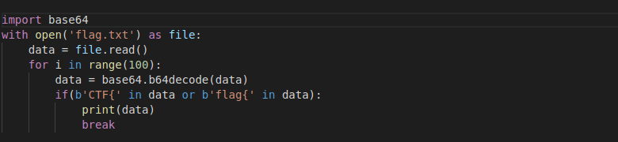

As the question gives us a link to mega so we download the file/directory attached to it.
In attachment we get a file named "flag.txt" that contain random words so it's going to be a cipher what what cipher?
.Looking at the file we see cipher ends with = so it can be base64 and also the name of problem also gives this hint. So we
decode that text with base64 but we get another random words ends with =.
So may be this is loop of base64 cipher one cipher into another so to get text from that we write a python script
as shown below

In the script we read from the file and decode that cipher in loop unless we either get 'CTF{' or 'flag{' in it and we get lucky and found
this text at 32nd times. So this flag is encoded 32 times with base64 encoding.